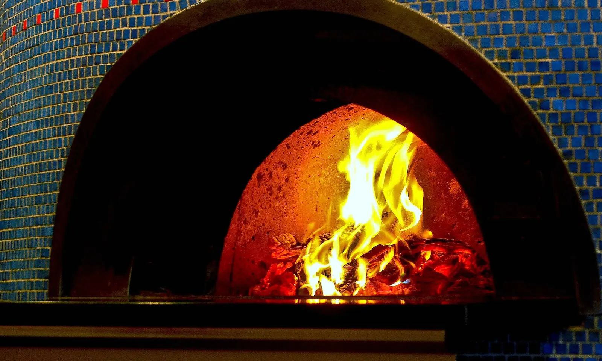
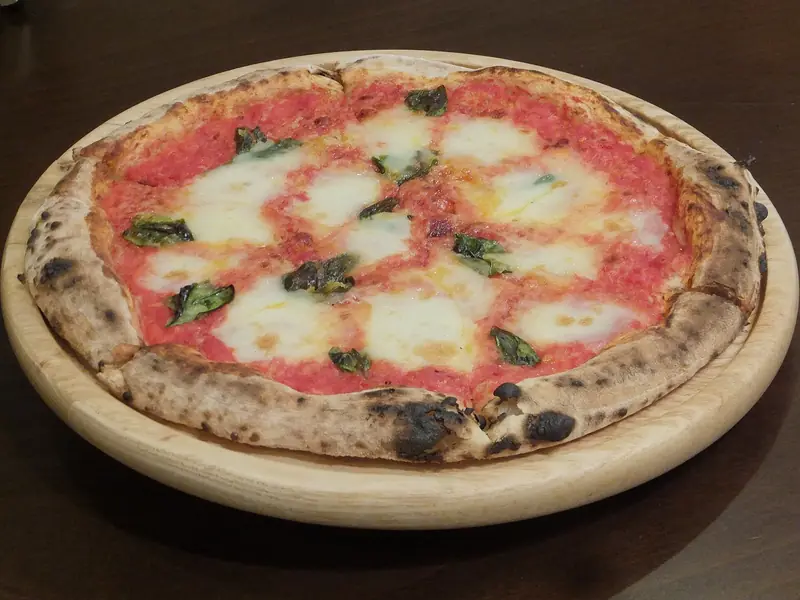

…
Forró pizza.Bátaszéken.
Pizza, gulyás, frissensültek a Bajai úton. Helyben, elvitelre, vagy házhoz kérve.
Rendelés telefonon74 492 590Így rendelsz
1
Hívj fel
Mondd meg, mit kérsz. Ha nem tudod, segítünk választani.
2
Megmondjuk, mikorra
Pontos időt kapsz, nem kell a pultnál várnod.
3
Elviszed, vagy visszük
Átveszed útközben, vagy házhoz kéred a környéken.
Pizzák
Példa-lista. A véglegesbe az Önök teljes pizzakínálata kerül, méretekkel és árakkal.

Nem csak pizza